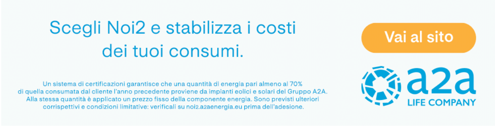
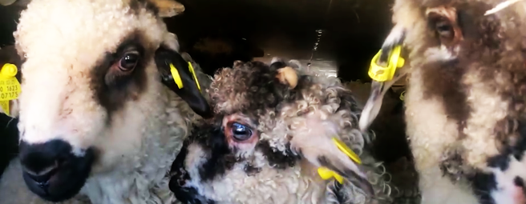
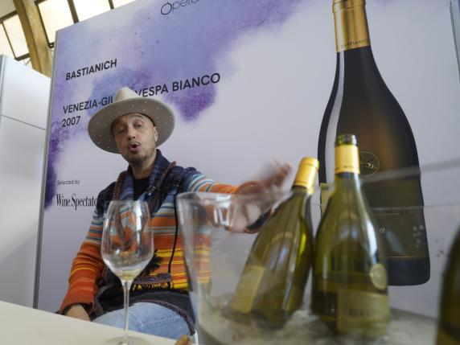
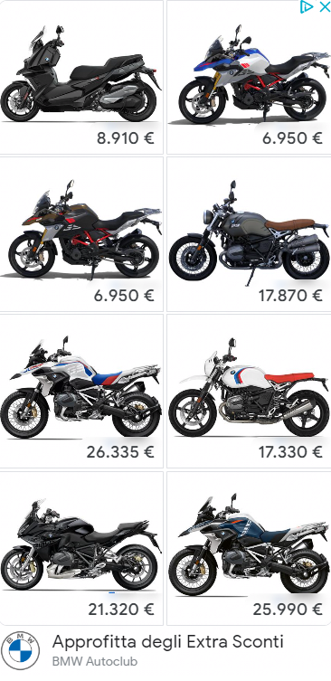

lunedì 10 aprile 2023 - Aggiornato alle 12:00

- I video del giorno
 NEL TORINESE
NEL TORINESE
«Ho vinto 5 milioni e la mia vita è un incubo. All’inizio sei euforico e commetti errori, come il mio con i lingotti»
Vive a Torre Pellice, nel Torinese. Rapinato due volteSuperbonus, sì al decreto (con la protesta 5 Stelle): cessione crediti, villette, detrazioni, le novità
Superbonus, Unicredit riapre alla cessione del credito: chi può ottenerla e quanto costaCommissione di Vigilanza Rai, tre donne al vertice Boschi e Montaruli vice della presidente Floridia
La senatrice M5S eletta presidente con un accordo bipartisan. Il risiko delle altre commissioniLinus: «In 10 anni a Milano è cambiato tutto, i giovani non riescono a viverci. Tutto carissimo, dal cibo alle case»
La voce di Radio Deejay: «La città è più internazionale ma ha ceduto una parte dell’identità meneghina»Maria Kodama, vedova di Borges, non ha lasciato testamento. Che fine farà l’eredità del grande scrittore?
La compagna di una vita è morta a 86 anni lo scorso 26 marzo. L’eredità è vacante: comprende almeno due case, un palazzo e soprattutto l’archivio con i manoscritti di BorgesSalone Libro, Vittorio Feltri: «Mia nuora direttore, con me e mio figlio siamo tre in famiglia, troppi»
Lo scrive su twitter il fondatore di Libero commentando ironicamente la nomina di Annalena Benini a direttore della Fiera Internazionale del libroTotti-Blasi: Ilary non vuole assegno di mantenimento, ma non cede sui figli e sulla villa dell'Eur
La conduttrice avrebbe rinunciato a chiedere gli "alimenti"Strage di Bologna, le motivazioni della sentenza: «Prove eclatanti che Gelli contribuì»
«La figura di Paolo Bellini ne è conferma ed elemento costitutivo»Ana Obregón, madre a 68 anni: «La bimba nata dal seme di mio figlio morto: è mia nipote biologica»
 In un’intervista alla rivista Hola, l’attrice spagnola ha
rivelato che la bimba nata il 20 marzo tramite maternità surrogata in Florida è la figlia
di Aless, morto nel 2020, per un cancro
In un’intervista alla rivista Hola, l’attrice spagnola ha
rivelato che la bimba nata il 20 marzo tramite maternità surrogata in Florida è la figlia
di Aless, morto nel 2020, per un cancro
Il teatro che cerca solo attrici incinte: «Sfatiamo il tabù della gravidanza come ostacolo alla carriera»
Il Teatro di Villazzano lancia una call per donne incinte. L'iniziativa si colloca all'interno del Festival del Tabù in cui verranno messi in scena spettacoli incentrati sul diritto alla maternitàVuole togliersi la vita lanciandosi dal ponte Carabiniere la raggiunge e la convince a non farlo
Il militare ha scavalcato il parapetto e ha iniziato a parlare con lei. Ottenuta la sua fiducia, l’ha riportata al sicuroRkia, il racconto del vicino: «La pistola era in un cassetto che non poteva aprire un bambino»
Rovigo, l'anziano vicino di casa della mamma morta parla della sua arma nascosta in un comodinoAssegno unico, al via il nuovo simulatore Come si calcola l’importo e come funziona
Sul sito dell’Istituto di previdenza è disponibile la nuova versione del simulatore ad accesso libero, aggiornato con i nuovi importi decisi dalla legge di BilancioBonus revisione auto, via alle domande per il 2023: ecco come funziona
Chi nel corso del 2023 effettuerà la revisione alla propria auto, motore o rimorchio, a partire da lunedì 3 aprile, potrà presentare domanda per ricevere il contributo del valore di 9,95 euro attraverso il portale del MitL’assicurazione auto e moto ora si paga a consumo: 12 euro al mese per 200 km
Necessario montare una dispositivo a bordo collegato ad un app per misurare i km percorsi. E vale anche per assicurazione motoLo Spid resta: il governo trova i fondi per i gestori dell’identità digitale
Risorse una tantum per 40 milioni di euro per garantire la sostenibilità degli adeguamenti tecnologici richiesti ai gestori di Spid. Lo prevede un emendamento presentato dal governo al decreto PnrrAmmassati, affamati, feriti: i viaggi horror degli agnelli che arrivano in Italia per Pasqua
 L’inchiesta sul campo di Essere Animali evidenzia le inaccettabili condizioni di trasporto di centinaia di migliaia di capi importati vivi dai Paesi dell’Est europeo e destinati ai macelli di casa nostra. I controlli della polizia stradale. Le proposte di modifica delle regole da parte della Ue e le resistenze di alcuni Stati (tra cui l’Italia)I genitori che hanno abbracciato il Papa: «Ci ha stretti a lui come se stringesse tutti i genitori del mondo»
Parlano Serena e Matteo, genitori della bimba che si è spenta nelle ore in cui il Papa stava lasciando il Gemelli dopo il ricovero. Era nata con la trisomia 18Memo Remigi: «La 19enne Barbara D’Urso mi fece sentire speciale, ma poi ho risposato mia moglie»
Il cantante: «Jessica Morlacchi? L’ho chiamata, non ha risposto. Mia moglie l’ho conosciuta, amata, tradita e riconquistata. Ci siamo sposati due volte»Salone internazionale del vino: gli appuntamenti dell’ultima giornata
I migliori vini rossi italiani (secondo il giudizio di tutte le guide): la classificaVinitaly 2023: al via l’edizione «sobria», tra salute, musica e cultura. Le curiosità
Un Vinitaly sobrio per dimostrare che bere uno o due bicchieri non è dannoso come fumare un pacchetto sigarette al giornoJoe Bastianich e «Bella ciao» al Vinitaly: «Conosco solo tre canzoni italiane.
 L'imprenditore e conduttore tv: «Incontrerò Giorgia Meloni a Roma e le parlerò di cannabis. Iene e fiction, non ho nessuna nostalgia di Masterchef»Milano, la trappola dell'uomo che ha violentato per ore una ragazza di 23 anni: «Hai perso il cellulare? Ti aiuto io...»
La vittima era «spaesata» fuori da un locale in corso Como. Arrestato un 37enne con precedenti per molestie. L'ha condotta in un parcheggio dove l'ha tenuta prigionieraL’ultimo saluto di Elisabetta: il gesto d’affetto alla folla e la sedia a rotelle nascosta
L’apparizione a Buckingham Palace lo scorso 5 giugno durante il Giubileo di Platino e la supplica di Carlo perché salutasse i sudditi, nonostante le precarie condizioni di salute: le nuove rivelazioni in un libro del giornalista Robert JobsonDonna ha un malore al concerto, Ramazzotti ai soccorritori: «Dieci minuti in più ed era già morta»
Il cantautore interrompe il live e rimprovera i paramedici per averci messo troppo tempoBecker: «In carcere fra stupratori e trafficanti. I più duri mi proteggevano»
«Ero solo un numero. Clima violento, ho imparato una lezione»
